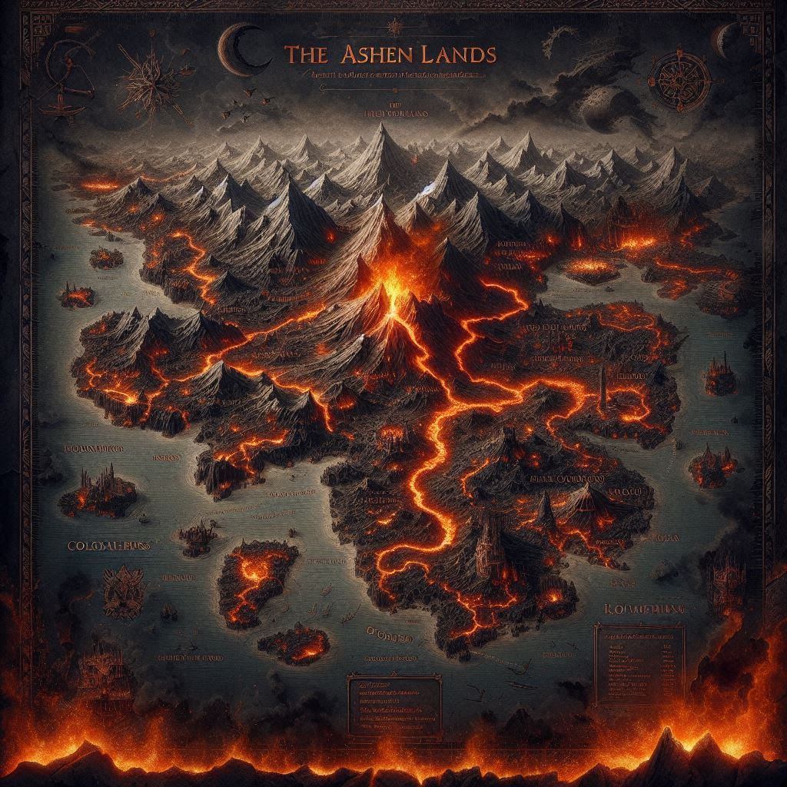

Zethara'nın Dünyası
Ateş Diyarı
Zethara'nın hüküm sürdüğü topraklar. Alevlerle çevrili bu volkanik bölge, kadim güçlerin merkezi.
Sıcaklık: Aşırı
Arazi: Volkanik
Kristal Zirve
Kadim sırların saklandığı kutsal mekan. Kristal Efsun'un gücünün kaynağı.
Yükseklik: Ekstrem
Mistik Güç: Yüksek
Kızıl Tılsım
Büyülü enerjinin yoğun olduğu ormanlar. Zethara'nın Kalbi'nin gizlendiği yer.
Büyü: Çok Yüksek
Tehlike: Ekstrem

Donmuş Taç
Orlyn'in kalesi. Lav denizinin ortasında yükselen, buzla kaplı yapı.
Savunma: Çok Yüksek
Tehlike: Kritik
Gölge Ormanı
Karanlık sırların ve tehlikelerin gizlendiği lanetli orman.
Görüş: Çok Düşük
Tehlike: Yüksek
Efsun Mağarası
Kristal Efsun'un saklandığı kadim mağara sistemi.
Büyü: Çok Yoğun
Koruma: Yüksek